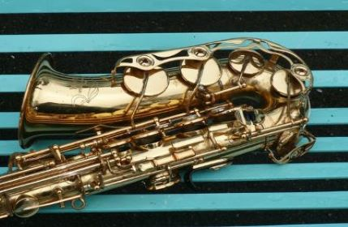

The Saxophone is a great instrument. designed in the 1840's, it has been a staple of modern music since its use in the classical era of Jazz.
Though originally designed for orchestral music, it is most thought of as a contemporary instrument used mostly in jazz, rock, and pop.
The purpose of this website is to provide information about the saxophone to anyone with little or no musical knowledge or with a lot of music knowledge.
Use the headers above to see the different pages.